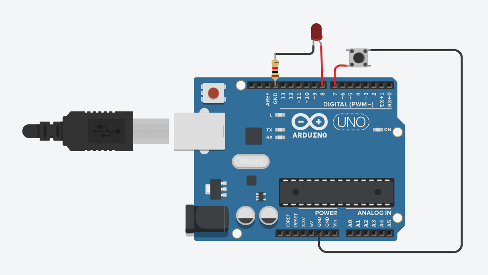

-
Microcontrolador
Com o app Tinkercad, frealizamos a programação na linguagem C, fizemos uma programação para que o pino de LED acenda e depois fizemos um contador, para que as luzes acendessem em sequencia, realizamos também a programação de um semáfaro.
 -
Sensor ultrassonicos
No app Tikercad, também fizemos a programação de um senssor ultrssonico, simulando um sensor de ré de um automóvel.

-
Robótica
Nas aulas de robótica, aprendemos sobre a linguagem de programação Melfa Basic IV.